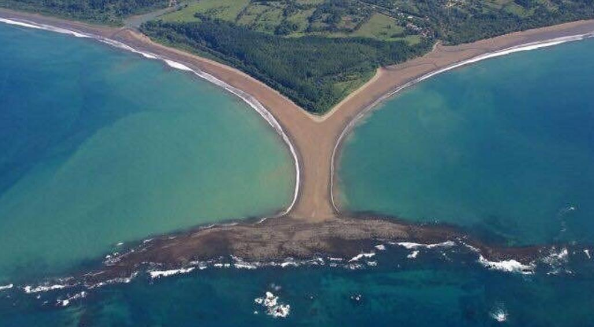

Costa Rica • Pacífico Sur
Descubre uno de los destinos naturales más impresionantes de Costa Rica, hogar del Parque Nacional Marino Ballena y de la famosa Cola de la Ballena.
ExplorarBahía Ballena está ubicada en el cantón de Osa, Puntarenas. Es reconocida por su riqueza natural, playas, bosques tropicales y la posibilidad de observar ballenas jorobadas durante sus migraciones.
Su principal atractivo es la formación natural conocida como La Cola de la Ballena, visible durante la marea baja.
Temporadas ideales para observar ballenas jorobadas y delfines.
Playa Uvita, Playa Ballena y Playa Piñuela ofrecen paisajes únicos.
Recorre bosques tropicales y observa fauna silvestre.
Snorkel, kayak, surf y tours en embarcación.
Vista desde el aire, esta formación rocosa y arenosa tiene la forma de la cola de una ballena. Es uno de los íconos naturales más fotografiados de Costa Rica.
Coloca tu fotografía en: images/cola-ballena.jpg
Uno de los ecosistemas marinos más importantes del país.
Disfruta de espectaculares puestas de sol frente al Pacífico.
Hospitalidad, naturaleza y tranquilidad en un solo destino.